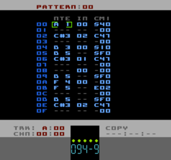

Pattern Editor Page
A Pattern has 3 columns: NTEINCM1
Note Column
The Notes column is pretty self explanatory. The only special feature of this is the ability to make a note into a "tie-note" (and back again). A tie-note is one where the pitch is changed but certain aspects of the synthesis are not reset/initialised as they are with a normal note. Things such as the ADSR Envelope. When Pulsar encounters a tie-note, if another note is already playing, the ADSR Envelope of that note will continue rather than being initialised to the Attack stage.
Track D Notes
The noise voice doesn't have notes as such, instead the noise
frequency is just a number, 00 to 0F. In Pulsar this is represented by the first sixteen notes, "A 1" to "C 3". Notes "C#3" to "E 4" are used to access the "tone mode" (metallic-sounding noise that the NES is reknowned for).
Instruments
Again, pretty obvious what you put in here. One difference between Pulsar and LSDJ is that Pulsar doesn't require an Instrument number on each note. Instead, once an Instrument is specified it will remain in use on that Track until a new one is set.
CM1
This is actually two columns. The first one, a single letter, is the Command type. The second one is the parameter/data associated with the Command. You edit them both separately and the Context Navigation works on either column.
Handy Hints!
If you put the cursor on a command (either the Command letter or the parameter) and hold A for a short while, a hint box will appear giving you a (very) brief explanation of the command. You can change commands while the box is still visible. Once you let got of A (or tap B to delete the command) the hint box disappears again.